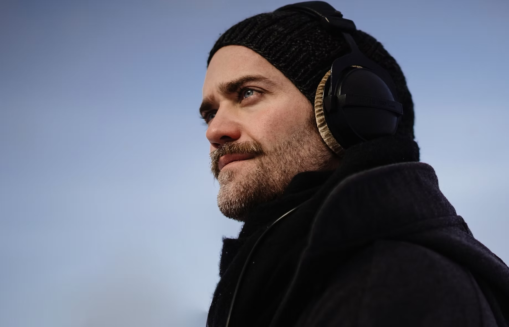

Øyvind Blikstad
Hva skjer når lyd møter noe annet?
Noen ganger oppstår musikk.
Noen ganger oppstår resonans.
Noen ganger oppstår spørsmål.
Det som oppstår i møtet, er det jeg utforsker.
Hvem er Øyvind?
Jeg har brukt mer enn tjue år på å følge ett spørsmål.
Hva skjer når lyd møter noe annet?
Gjennom film. Gjennom musikk. Gjennom teknologi. Gjennom mennesker. Gjennom kropp og pust. Gjennom kunst.
Noen ganger leder spørsmålene til svar. Andre ganger leder de til nye spørsmål.
Det er disse sporene jeg følger.

Kjerneidé
Arbeidet handler ikke om lyd alene.
Det handler om hva som oppstår når lyd møter noe annet.
Ikke lyden i seg selv. Ikke teknologien i seg selv. Men fenomenene som oppstår i møtet.
Det som ikke finnes før to ting møtes.
Universet
Tre hovedspor. Ett grunnspørsmål.
Breathing Cycles
En utforskning av hvordan rytme og musikk kan samspille med kroppens naturlige pustebevegelser. Musikken blir ikke sentrum. Pusten blir sentrum.
Hva skjer når lyd møter kroppen?ReHuman
En utforskning av resonans, vibrasjon, nervesystem og tilstedeværelse. Ikke gjennom teori alene. Gjennom erfaring. Gjennom kroppen.
Hva skjer når lyd møter tanker?ReWorld
Et eksperiment i perspektiver, spørsmål og menneskelig forståelse. Ikke for å vinne diskusjoner. Men for å forstå verden litt bedre.
Kunstnerisk ståsted
Lyd er ikke bare noe vi hører.
Lyd er vibrasjon. Bevegelse. Informasjon. Relasjon.
For meg er lyd et språk som eksisterer før ordene.
Jeg er interessert i grenselandet mellom det målbare og det opplevde. Mellom kunst og vitenskap. Mellom teknologi og menneske. Mellom det vi vet, og det vi fortsatt forsøker å forstå.

Erfaring og anerkjennelser
Dokumentasjon, ikke identitet.
Øyvind er født i 1983 og har arbeidet med lyd i over to tiår. Han er utdannet i musikkvitenskap og filmkomposisjon, med erfaring fra film, dokumentar, kunstprosjekter, elektronisk musikk og helserettet lydarbeid.
- Annecy Film Festival - Off Limits Award, vinner
- Animafest Cyprus - Grand Prix Award, vinner
- Nordic Docs - Best Short Documentary, vinner
- European Film Academy - Young Audience Award, vinner
- Gullrutens fagpris - nominasjon for beste musikk
- Spellemann - nominasjon for beste elektroniske album
Dette er ikke først og fremst en CV.
Det er inngangen til et laboratorium.
Et sted der fremtidige prosjekter kan vokse fra samme spørsmål.